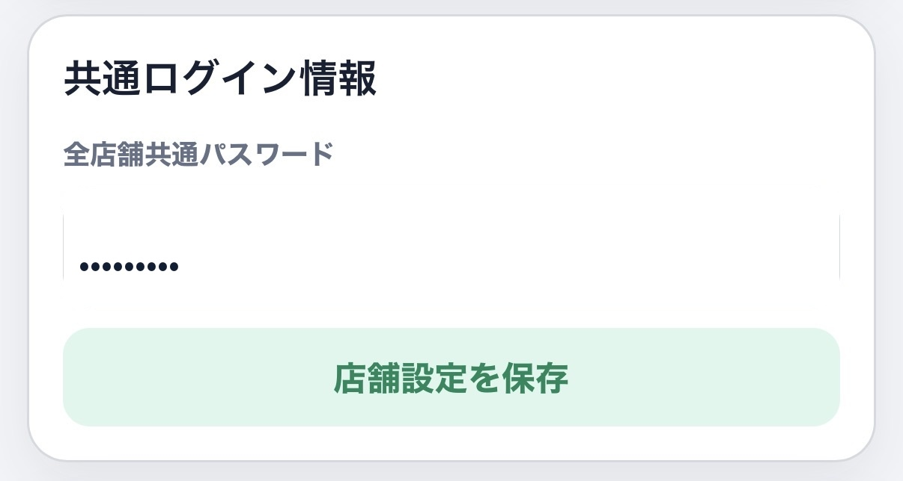
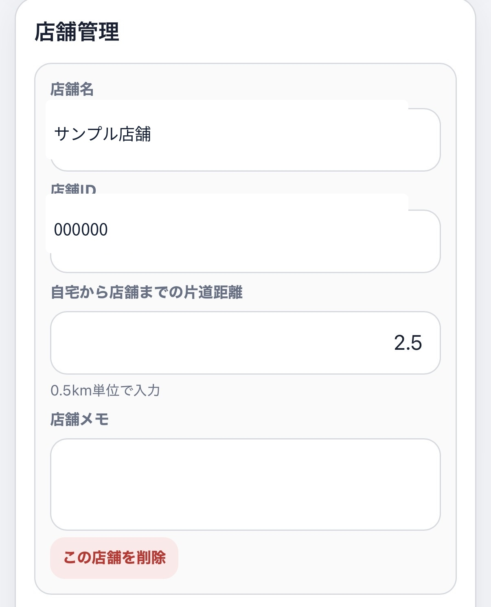
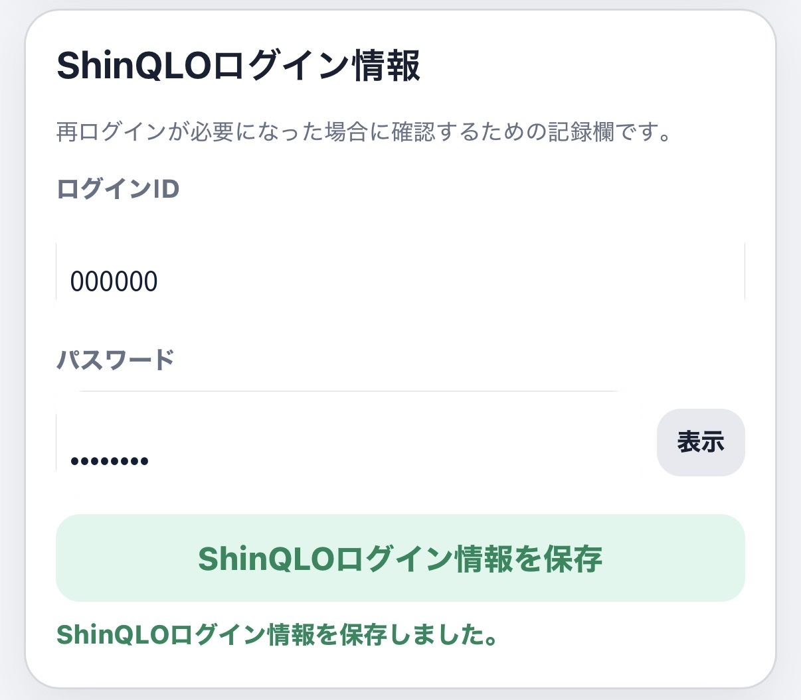
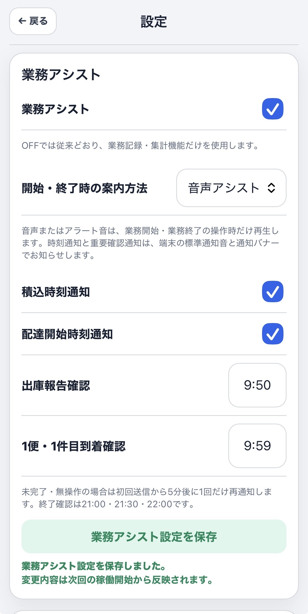
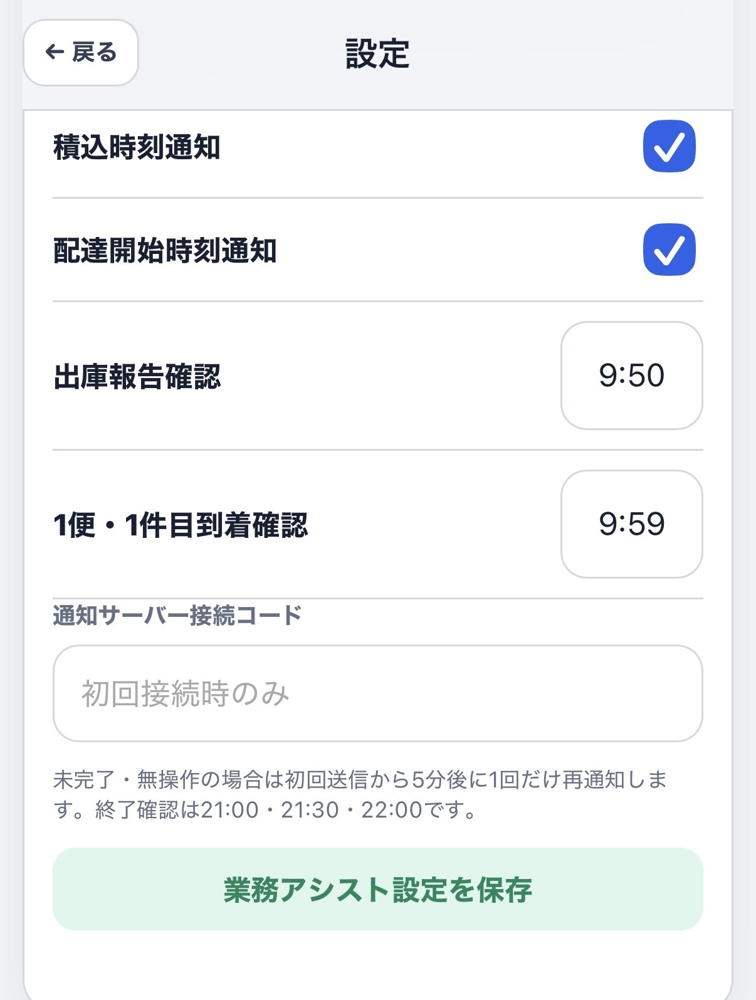

利用を始める前の設定
アプリ上部の「設定」を開き、次の順に登録します。必要なID・パスワード・接続コードは、アプリ提供者または管理者から別途案内されたものを使用してください。
1. 共通ログイン情報
配送端末へのログイン時に入力するパスワード（9桁）を記録できます。保存後はメイン画面のログイン情報から確認できます。

2. 店舗管理
稼働する店舗を登録します。店舗名と店舗IDに加え、普段の通勤ルートでの自宅から店舗までの片道距離を登録しておくと、翌日の開始メーター候補の計算に利用されます。

3. ShinQLOログイン情報
ShinQLOへの再ログインが必要になってしまった場合などに備え、ログインIDとパスワードを記録できます。パスワードは通常、伏せ字で表示されます。

4. 業務アシスト
業務アシストをONにすると、時刻通知やShinQLO入力確認を利用できます。開始・終了時の案内方法は「音声アシスト」または「アラート音」から選べます。

5. 通知内容と時刻
積込時刻通知、配達開始時刻通知のON・OFFと、出庫報告・1便1件目到着の確認時刻を設定します。通知サーバー接続コードは、本アプリのURLと共に別途案内されているコードをコピーし、初回接続時のみ入力（ペースト）してください。

設定の反映時期
業務アシスト設定の変更内容は、次回の稼働開始から反映されます。稼働中に時刻を変更した場合は、業務終了後に改めて稼働開始してください。
業務アシスト設定の変更内容は、次回の稼働開始から反映されます。稼働中に時刻を変更した場合は、業務終了後に改めて稼働開始してください。